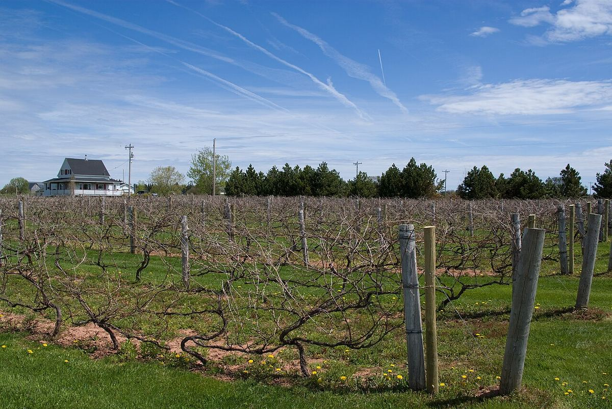

Canada
Il Canada produce vino soprattutto in Ontario e nella Columbia Britannica, in zone mitigate da grandi laghi. È celebre per il suo vino del ghiaccio, ma produce anche bianchi freschi di Riesling e Chardonnay e rossi di Pinot Nero, Cabernet Franc e Merlot.

Storia
I primi coloni europei trovarono viti selvatiche nel territorio dell’attuale Canada, ma il vino che se ne ricavava, e in seguito quello di varietà americane come la Concord, era di qualità modesta. Johann Schiller, ex soldato tedesco stabilitosi in Ontario all’inizio dell’Ottocento, è considerato di solito il padre della vinificazione canadese. Nel corso dell’Ottocento sorsero cantine nella penisola del Niagara e sull’isola di Pelee, nel lago Erie, ma all’inizio del Novecento il proibizionismo in diverse province frenò lo sviluppo del settore, che per decenni produsse soprattutto vini dolci e fortificati da uve americane e ibride.
La trasformazione arrivò negli anni Settanta. Nel 1975 Inniskillin, a Niagara-on-the-Lake, ottenne la prima licenza di cantina concessa in Ontario dalla fine degli anni Venti, aprendo la strada a una generazione di piccole cantine dedicate alle varietà di Vitis vinifera. Alla fine degli anni Ottanta l’accordo di libero scambio con gli Stati Uniti costrinse il settore a diventare più competitivo e portò all’estirpazione di gran parte dei vigneti americani e ibridi, sostituiti da varietà europee. Nella Columbia Britannica la valle dell’Okanagan seguì un’evoluzione simile e divenne la seconda grande regione del paese.
Clima
Il clima canadese è continentale, con inverni molto freddi, perciò la viticoltura di qualità è possibile solo dove grandi masse d’acqua mitigano le temperature. In Ontario i laghi Ontario ed Erie ritardano il germogliamento in primavera, prolungano l’autunno e riducono il rischio di gelate estreme; nel Niagara la scarpata che si alza dietro la riva del lago favorisce inoltre la circolazione dell’aria. Nella Columbia Britannica la valle dell’Okanagan è riparata da montagne che la proteggono dall’umidità del Pacifico, con estati calde, secche e molto luminose, soprattutto a sud. Il freddo invernale resta un rischio per le viti, e in alcuni luoghi vengono rincalzate o protette durante l’inverno.
Regioni
L’Ontario è la principale provincia produttrice, con la penisola del Niagara come zona più importante, seguita da Lake Erie North Shore e Prince Edward County. Nella Columbia Britannica spicca la valle dell’Okanagan, insieme alla valle del Similkameen e alle zone costiere dell’isola di Vancouver e della valle del Fraser. Il Québec e la Nuova Scozia hanno una produzione minore, basata in buona parte su varietà ibride resistenti al freddo; la Nuova Scozia è nota per i suoi bianchi freschi e i suoi spumanti.
Stili
Lo stile più famoso è il vino del ghiaccio (icewine), prodotto con uve lasciate sulla pianta finché non gelano naturalmente in pieno inverno. Pressandole congelate, l’acqua resta trattenuta sotto forma di cristalli e si ottiene un mosto molto concentrato in zuccheri e acidità. Si produce soprattutto con Vidal, una varietà ibrida dalla buccia spessa, e con Riesling, e anche con Cabernet Franc. Accanto a esso il Canada produce bianchi di acidità vivace da Riesling e Chardonnay, rossi di Pinot Nero, Cabernet Franc e Gamay in Ontario e rossi più maturi di Merlot, Cabernet Sauvignon e Syrah nel sud dell’Okanagan, oltre a spumanti.
Normativa
I vini di qualità prodotti interamente con uve canadesi rientrano nel sistema VQA (Vintners Quality Alliance), creato in Ontario nel 1988 e adottato poi nella Columbia Britannica. Il sistema definisce denominazioni geografiche, dalle regioni fino alle sottozone, e fissa norme di produzione ed etichettatura. Per il vino del ghiaccio richiede che le uve siano vendemmiate naturalmente congelate, a temperature di almeno otto gradi sotto zero, e vieta il congelamento artificiale. Questi vini vanno distinti da quelli etichettati come imbottigliati in Canada, ottenuti da vini importati miscelati con vino locale.
Regioni e denominazioni
Niagara Peninsula
Denominazione VQA Ontario · La penisola del Niagara, tra i laghi Ontario ed Erie, è la principale regione vitivinicola del Canada. Grazie all’influenza del lago e della scarpata del Niagara produce Riesling, Chardonnay, Pinot Nero e Cabernet Franc, oltre a buona parte del vino del ghiaccio del paese.
Okanagan Valley
Indicazione geografica BC VQA · La valle dell’Okanagan, nell’interno della Columbia Britannica, è la principale regione vitivinicola del Canada occidentale. Si estende lungo una catena di laghi, da un nord fresco a un sud caldo e semidesertico, e produce dal Riesling e dal Pinot Nero fino al Merlot e al Syrah.